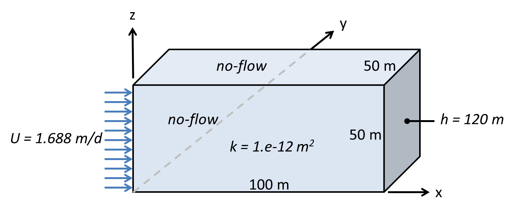

One-dimensional, steady-state, saturated flow#
This tutorial uses a simple saturated flow simulation problem to demonstrate the basic workflow required to create an input file, run Amanzi, and view results.
Problem definition#
Consider the following steady-state saturated flow scenario:
{kind=link}
Although the domain is three-dimensional, the imposed boundary conditions create a one-dimensional flow in the \(x\)-direction. The Darcy velocity is expected to be \(U = 1.688\) m/d = \(1.954 \times 10^{-5}\) m/s throughout the domain considering mass conservation. From Darcy’s law
(1)#\[U = \frac{\rho g k}{\mu} \cdot \frac{h_{in} - h_{out}}{L} = K \frac{h_{in} - h_{out}}{L}\]
where \(K = \rho g k / \mu\) is hydraulic conductivity, the inlet hydraulic head corresponding to the prescribed inlet flux \(U\) is
(2)#\[h_{in} = \frac{U L}{K} + h_{out}\]
Assuming \(\rho = 998.2\) kg/m3 and \(\mu = 1.002 \times 10^{-3}\) Pa \(\cdot\) s for water at 20C, and \(g = 9.807\) m/s2, the hydraulic conductivity of the porous medium is \(K = 9.7698 \times 10^{-6}\) m/s = \(0.844\) m/d and the computed hydraulic head at the inlet should be
\[h_{in} = \frac{1.688 \text{ m/d} \cdot 100\text{ m}}{0.844 \text{ m/d}} + 120\text{ m} = 320 \text{ m}\]
Analogous to Equation (2) the expected hydraulic head at an arbitary location \(x\) is
(3)#\[h(x) = \frac{U (L - x)}{K} + h_{out}\]
where \((L - x)\) is the distance upgradient of the outlet.
Amanzi input specifications#
Amanzi input takes the form of an eXtensible Markup Language (XML) file
with the extension *.xml. Although any text editor may be used to create or
edit the contents of the file, an editor that provides XML syntax-highlighting
improves readability and is helpful toward identifying syntax errors.
The following image is an example of XML syntax-highlighting in the Notepad++
editor for Microsoft Windows (http://notepad-plus-plus.org/):

The Amanzi input specification document (insert link) defines
the content and format of an XML input file. A complete Amanzi input file
for this tutorial is listed in a separate section below.
At the top level is an XML element named amanzi_input
<amanzi_input version="1.5-dev" type="unstructured">
</amanzi_input>
with an attribute type that defines the model grid type, either
unstructured or structured. A second attribute defines the Amanzi version.
Nested within this element are additional XML
elements with associated content and attributes to define other model inputs.
Model parameters are defined through a combination of element attributes,
e.g. water in the liquid_phase element,
<liquid_phase name="water">
and element content, e.g. 998.2 kg/m3 in the density element,
<density>998.2</density>
as defined by the Amanzi input specification. Although not required by the XML standard or Amanzi, indentation using tabs and/or spaces is commonly used to indicate the hierarchy of elements and improve readibility. Tabs are used in this tutorial example to show the file hierarchy. Although Amanzi XML element names and the file structure are intended to be reasonably self-explanatory, selective commentary is provided here for further guidance.
Amanzi offers the user two numerical gridding approaches.
The structured grid option refers to an orthogonal grid of rectangular (2D) or
brick (3D) elements that may be further subdivided through
Adaptive Mesh Refinement (AMR). The unstructured grid option can accommodate a
network of non-orthogonal cells that may not be connected on a regular
pattern defined by \((i,j,k)\) coordinate indices. The unstructured
option also accommodates structured grids, but not multi-level AMR as with the
structured grid option. A simple orthogonal structured grid with no refinement
will be used for this tutorial, and either gridding option would suffice.
However, the unstructured option is selected in this example through the
type attribute in the amanzi_input XML element:
<amanzi_input version="1.5-dev" type="unstructured">
Nested within the amanzi_input element are additional XML elements defining
various attributes of the numerical simulation to be performed. Although the order
of these elements is arbitrary, users will typically want to sequence elements to
mirror their conceptualization of the physical problem. For this tutorial we begin
with the model_description element:
<model_description name="SR Test Problem">
<comments>Steady-State Saturated: linear pressure profile</comments>
<model_id>Single-Phase Saturated</model_id>
<author>Elizabeth Keating</author>
<units>
<length_unit>m</length_unit>
<time_unit>s</time_unit>
<mass_unit>kg</mass_unit>
<conc_unit>molar</conc_unit>
</units>
</model_description>
Besides model identification, this block defines the dimensional units to be used
for the numerical simulation. Currently Amanzi requires the SI units indicated
in the model_description/units element.
The units of density, viscosity, pressure, hydraulic conductivity, and
permeability are thus kg/m3, Pa \(\cdot\) s, Pa, m/s,
and m2, respectively.
Simulation outputs also use these dimensional units.
The next input block is the process_kernels element:
<process_kernels>
<comments>Single phase flow only</comments>
<flow state = "on" model = "saturated"/>
<transport state = "off" algorithm="none"/>
<chemistry state = "off" engine="none"/>
</process_kernels>
The tutorial problem involves only fully-saturated flow, so the saturated model
is selected here, and transport and chemistry are explicitly turned off.
The latter may be implicitly turned off by omitting those two entries.
In the phases element
<phases>
<liquid_phase name="water">
<eos>false</eos>
<density>998.2</density>
<viscosity>1.002E-03</viscosity>
</liquid_phase>
</phases>
water is the only phase present (as a liquid), and
equation-of-state (eos) computations are turned off in favor of direct
specification of fluid density and viscosity as 998.2 kg/m3and 1.002e-03 Pa \(\cdot\) s, respectively.
Under execution_controls the steady mode and first-order backward-difference
(backward Euler) differencing scheme (bdf1) are chosen:
<execution_controls>
<verbosity level="high"/>
<execution_control_defaults mode="steady" method="bdf1" />
<execution_control start="0.0" end="1000 y" init_dt="1000 y" mode = "steady" method="bdf1" />
</execution_controls>
The start and end times may both be zero for a steady-state calculation.
Controls for the selected numerical scheme are defined in the block
<numerical_controls>
<linear_solver>
<max_iterations>30</max_iterations>
<tolerance>1.0e-18</tolerance>
</linear_solver>
</numerical_controls>
Here recommended default values have been selected.
The computational mesh may be imported (read from file) or, for simple geometries,
generated by Amanzi. A simple mesh is adequate for this simulation so the
latter option is selected for this tutorial example in the mesh element:
<mesh framework="mstk">
<comments>Three-dimensional box 100m x 50m x 50m</comments>
<dimension>3</dimension>
<generate>
<number_of_cells nx = "100" ny = "5" nz = "50"/>
<box low_coordinates = "0.0,0.0,0.0" high_coordinates = "100.0,50.0,50.0"/>
</generate>
</mesh>
Note that a 3D domain is specified through the dimension element. The
coordinates under mesh/generate/box refer to the
\((x_{min}, y_{min}, z_{min})\) and \((x_{max}, y_{max}, z_{max})\)
corners of the computational domain, and must be
comma-separated. Whitespace is allowed and parentheses may be used to bracket
coordinates in the form (x,y,z) if desired. The nx, ny, and nz
values define the number of computational cells in each coordinate direction.
Discretization is specified for the \(y\) and \(z\) coordinates,
although no variability is expected in these directions.
The user could effectively create a one-dimensional simulation by setting
ny = 1 and nz = 1.
The regions element is used to define volumes for material property assignments
<regions>
<comments></comments>
<region name ="Entire Domain">
<comments>One region comprising the entire domain</comments>
<box low_coordinates= "0.0,0.0,0.0" high_coordinates="100.0,50.0,50.0"/>
</region>
surfaces for boundary condition assignments
<region name ="Upstream">
<comments>Upstream boundary</comments>
<box low_coordinates= "0.0,0.0,0.0" high_coordinates="0.0,50.0,50.0"/>
</region>
and discrete points
<point name="Well 1" coordinate=" 0.5, 25.0, 25.5"/>
<point name="Well 2" coordinate="50.5, 25.0, 25.5"/>
<point name="Well 2t" coordinate="50.5, 25.0, 49.5"/>
<point name="Well 2b" coordinate="50.5, 25.0, 0.5"/>
<point name="Well 3" coordinate="99.5, 25.0, 25.5"/>
</regions>
The location points are defined in anticipation of
hydraulic head and pressure observations to be specified below.
To avoid ambiguity and the need for interpolation,
the observation points are defined so that each
location coincides exactly with a grid node (computational cell center).
The grid spacing in the \(x\)-direction is \(1.0\) meter,
so cell centers are positioned at \(x_i = 0.5, 1.5, 2.5, ..., 99.5\).
Similarly, the \(y\)-coordinates of grid
nodes are \(y_i = 5, 10, 15, 20,\) and \(25\), and finally
\(z_i = 0.5, 1.5, 2.5, ..., 49.5\). Point Well 1 is located just inside the
inlet boundary near the center of the face. Point Well 3 is similarly located
one-half cell inside the downstream boundary. Point Well 2 is located near the
center of the domain (within one-half cell). Points Well 2t and Well 2b are
positioned above and below Well 2 at the top and bottom of the domain.
Although the simulation problem is steady-state, an initial condition is required ? why ?:
<initial_conditions>
<initial_condition name="Initial Condition">
<comments>Uniform pressure over entire domain</comments>
<assigned_regions>Entire Domain</assigned_regions>
<liquid_phase name = "water">
<liquid_component name = "water">
<pressure value = "101325.0" function="uniform"/>
</liquid_component>
</liquid_phase>
</initial_condition>
</initial_conditions>
The Amanzi pressure variable is absolute pressure.
Here atmospheric pressure(101325.0 Pa) is specified over the modeling domain
using the Entire Domain region specified above.
Next boundary conditions are specified as
<boundary_conditions>
<boundary_condition name = "Upstream BC">
<comments>Upstream boundary condition</comments>
<assigned_regions>Upstream</assigned_regions>
<liquid_phase name = "water">
<liquid_component name = "water">
<inward_mass_flux start="0.0" function= "constant" value="1.950187e-2"/>
</liquid_component>
</liquid_phase>
</boundary_condition>
<boundary_condition name = "Downstream BC">
<assigned_regions>Downstream</assigned_regions>
<liquid_phase name = "water">
<liquid_component name = "water">
<hydrostatic start="0.0" function= "constant" value="120.0"/>
</liquid_component>
</liquid_phase>
</boundary_condition>
</boundary_conditions>
The boundary condition at \(x=0\) is defined in the problem statement as a
volumetric flux \(U\) [m3/m2d = m/d].
Amanzi currently requires boundary conditions of this type to be specified as
a mass flux, \(\rho U\) [kg3/m2s].
Performing this calculation for \(\rho = 998.2\) kg/m3 and
\(U = 1.688\) m/d = \(1.954 \times 10^{-5}\) m/s
yields 1.95e-2 kg3/m2s for inward_mass_flux.
Material properties are defined in the materials element
<material name="Soil">
<comments>Homogeneous material properties throughout the entire domain</comments>
<mechanical_properties>
<porosity value="0.25"/>
<specific_storage model="constant" value="0.0"/>
</mechanical_properties>
<permeability x="9.998680356931206e-13" y="9.998680356931206e-13" z="9.998680356931206e-13"/>
<assigned_regions>Entire Domain</assigned_regions>
</material>
</materials>
For this steady-state saturated flow-only simulation porosity does not affect
the solution and its value is arbitrarily set to 0.25. The permeability values
are intrinsic permeability \(k\) [m2] rather than hydraulic
conductivity \(K = \rho g k / \mu\) [m/s], which is sometimes loosely referred
to as “permeability”.
In the definitions element
<definitions>
<macros>
<time_macro name="Steady State">
<time>1000 y</time>
</time_macro>
</macros>
</definitions>
the time_macro element defines the time at which
model observations will be written to output according to the
output/observations element that follows. Because the simulation is steady-state,
the time is set to zero.
The final input is the output block
<output>
<observations>
<filename>observation.out</filename>
<liquid_phase name="water">
<hydraulic_head>
<assigned_regions>Well 1</assigned_regions>
<functional>point</functional>
<time_macro>Steady State</time_macro>
</hydraulic_head>
<hydraulic_head>
<assigned_regions>Well 2</assigned_regions>
<functional>point</functional>
<time_macro>Steady State</time_macro>
</hydraulic_head>
\(\vdots\)
<aqueous_pressure>
<assigned_regions>Well 1</assigned_regions>
<functional>point</functional>
<time_macro>Steady State</time_macro>
</aqueous_pressure>
<aqueous_pressure>
<assigned_regions>Well 2</assigned_regions>
<functional>point</functional>
<time_macro>Steady State</time_macro>
</aqueous_pressure>
\(\vdots\)
<vis>
<base_filename>steady-flow</base_filename>
<num_digits>5</num_digits>
<time_macro>Steady State</time_macro>
</vis>
</output>
Observations, to be written to observations.out, are requested for hydraulic head
and (absolute) pressure at the five well locations previously defined under
regions/point. The vis element specifies 5 significant figures for the
visualization file with prefix steady-flow.
Amanzi execution#
Amanzi is executed from the command-line using this or analogous command for the user’s specific installation:
mpirun -n 4 install/current/bin/amanzi --xml_schema=install/current/bin/amanzi.xsd --xml_file=amanzi_steady_linear-isv2.xml
Here execution using 4 processor cores is specified by -n 4. Successful completion
is marked by SIMULATION_SUCCESSFUL followed by a timing summary
Amanzi::SIMULATION_SUCCESSFUL
**********************************************************
*** Timing Summary ***
**********************************************************
Amanzi results#
For the requested observation points, the following results are expected in terms of hydraulic head (Equation (3)) and pressure (\(P = (h - z)\rho g + P_{atm}\)):
ID |
x (m) |
h (m) |
P (Pa) |
|---|---|---|---|
Well 1 |
0.5 |
319.00 |
2974498 |
Well 2 |
50.5 |
221.00 |
1995564 |
Well 2t |
50.5 |
221.00 |
1760619 |
Well 2b |
50.5 |
221.00 |
2240297 |
Well 3 |
99.5 |
121.00 |
1036208 |
In output file observations.out, Amanzi produces the following results:
ID |
x (m) |
h (m) |
P (Pa) |
|---|---|---|---|
Well 1 |
0.5 |
319.01 |
2974465 |
Well 2 |
50.5 |
219.00 |
1995306 |
Well 2t |
50.5 |
219.00 |
1760595 |
Well 2b |
50.5 |
219.00 |
2240256 |
Well 3 |
99.5 |
121.00 |
1036175 |
The output from Amanzi is observed to agree closely with the expected hydraulic head and pressure results from the analytic solution. Minor mismatch is due to rounding of input data.
Amanzi XML input file#
<amanzi_input version="1.5-dev" type="unstructured">
<model_description name="SR Test Problem">
<comments>Steady-State Saturated: linear pressure profile</comments>
<model_id>Single-Phase Saturated</model_id>
<author>Elizabeth Keating</author>
<units>
<length_unit>m</length_unit>
<time_unit>s</time_unit>
<mass_unit>kg</mass_unit>
<conc_unit>molar</conc_unit>
</units>
</model_description>
<process_kernels>
<comments>Single phase flow only</comments>
<flow state = "on" model = "saturated"/>
<transport state = "off" algorithm="none"/>
<chemistry state = "off" engine="none"/>
</process_kernels>
<phases>
<liquid_phase name="water">
<eos>false</eos>
<density>998.2</density>
<viscosity>1.002E-03</viscosity>
</liquid_phase>
</phases>
<execution_controls>
<verbosity level="high"/>
<execution_control_defaults mode="steady" method="bdf1" />
<execution_control start="0.0" end="1000 y" init_dt="1000 y" mode = "steady" method="bdf1" />
</execution_controls>
<numerical_controls>
<linear_solver>
<max_iterations>30</max_iterations>
<tolerance>1.0e-18</tolerance>
</linear_solver>
</numerical_controls>
<mesh framework="mstk">
<comments>Three-dimensional box 100m x 50m x 50m</comments>
<dimension>3</dimension>
<generate>
<number_of_cells nx = "100" ny = "5" nz = "50"/>
<box low_coordinates = "0.0,0.0,0.0" high_coordinates = "100.0,50.0,50.0"/>
</generate>
</mesh>
<regions>
<comments></comments>
<region name ="Entire Domain">
<comments>One region comprising the entire domain</comments>
<box low_coordinates= "0.0,0.0,0.0" high_coordinates="100.0,50.0,50.0"/>
</region>
<region name ="Upstream">
<comments>Upstream boundary</comments>
<box low_coordinates= "0.0,0.0,0.0" high_coordinates="0.0,50.0,50.0"/>
</region>
<region name ="Downstream">
<comments>Downstream boundary</comments>
<box low_coordinates= "100.0,0.0,0.0" high_coordinates="100.0,50.0,50.0"/>
</region>
<point name="Well 1" coordinate=" 0.5, 25.0, 25.5"/>
<point name="Well 2" coordinate="50.5, 25.0, 25.5"/>
<point name="Well 2t" coordinate="50.5, 25.0, 49.5"/>
<point name="Well 2b" coordinate="50.5, 25.0, 0.5"/>
<point name="Well 3" coordinate="99.5, 25.0, 25.5"/>
</regions>
<initial_conditions>
<initial_condition name="Initial Condition">
<comments>Uniform pressure over entire domain</comments>
<assigned_regions>Entire Domain</assigned_regions>
<liquid_phase name = "water">
<liquid_component name = "water">
<pressure value = "101325.0" function="uniform"/>
</liquid_component>
</liquid_phase>
</initial_condition>
</initial_conditions>
<boundary_conditions>
<boundary_condition name = "Upstream BC">
<comments>Upstream boundary condition</comments>
<assigned_regions>Upstream</assigned_regions>
<liquid_phase name = "water">
<liquid_component name = "water">
<inward_mass_flux start="0.0" function= "constant" value="1.950187e-2"/>
</liquid_component>
</liquid_phase>
</boundary_condition>
<boundary_condition name = "Downstream BC">
<assigned_regions>Downstream</assigned_regions>
<liquid_phase name = "water">
<liquid_component name = "water">
<hydrostatic start="0.0" function= "constant" value="120.0"/>
</liquid_component>
</liquid_phase>
</boundary_condition>
</boundary_conditions>
<materials>
<material name="Soil">
<comments>Homogeneous material properties throughout the entire domain</comments>
<mechanical_properties>
<porosity value="0.25"/>
<specific_storage model="constant" value="0.0"/>
</mechanical_properties>
<permeability x="9.998680356931206e-13" y="9.998680356931206e-13" z="9.998680356931206e-13"/>
<assigned_regions>Entire Domain</assigned_regions>
</material>
</materials>
<definitions>
<macros>
<time_macro name="Steady State">
<time>1000 y</time>
</time_macro>
</macros>
</definitions>
<output>
<observations>
<filename>observation.out</filename>
<liquid_phase name="water">
<hydraulic_head>
<assigned_regions>Well 1</assigned_regions>
<functional>point</functional>
<time_macro>Steady State</time_macro>
</hydraulic_head>
<hydraulic_head>
<assigned_regions>Well 2</assigned_regions>
<functional>point</functional>
<time_macro>Steady State</time_macro>
</hydraulic_head>
<hydraulic_head>
<assigned_regions>Well 2t</assigned_regions>
<functional>point</functional>
<time_macro>Steady State</time_macro>
</hydraulic_head>
<hydraulic_head>
<assigned_regions>Well 2b</assigned_regions>
<functional>point</functional>
<time_macro>Steady State</time_macro>
</hydraulic_head>
<hydraulic_head>
<assigned_regions>Well 3</assigned_regions>
<functional>point</functional>
<time_macro>Steady State</time_macro>
</hydraulic_head>
<aqueous_pressure>
<assigned_regions>Well 1</assigned_regions>
<functional>point</functional>
<time_macro>Steady State</time_macro>
</aqueous_pressure>
<aqueous_pressure>
<assigned_regions>Well 2</assigned_regions>
<functional>point</functional>
<time_macro>Steady State</time_macro>
</aqueous_pressure>
<aqueous_pressure>
<assigned_regions>Well 2t</assigned_regions>
<functional>point</functional>
<time_macro>Steady State</time_macro>
</aqueous_pressure>
<aqueous_pressure>
<assigned_regions>Well 2b</assigned_regions>
<functional>point</functional>
<time_macro>Steady State</time_macro>
</aqueous_pressure>
<aqueous_pressure>
<assigned_regions>Well 3</assigned_regions>
<functional>point</functional>
<time_macro>Steady State</time_macro>
</aqueous_pressure>
</liquid_phase>
</observations>
<vis>
<base_filename>steady-flow</base_filename>
<num_digits>5</num_digits>
<time_macro>Steady State</time_macro>
</vis>
</output>
</amanzi_input>